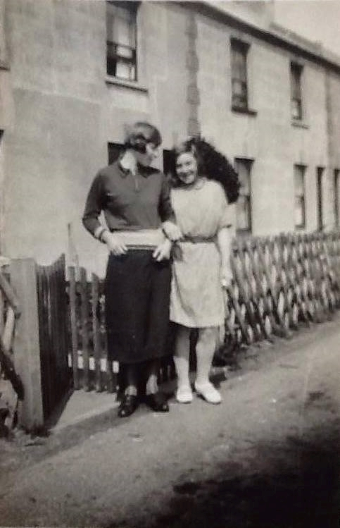
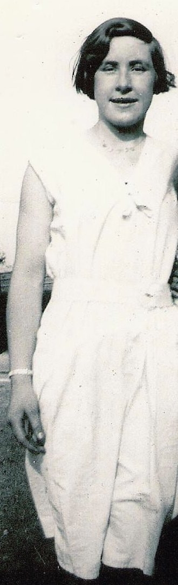

Freda Violet Hards (née Cowell) 1918 - 2005
[ Home ] | [ Calendar ] | [ Surnames Index ] | [ Family History ]The daughter of James Cowell (a seaman collier with the whitstable shipping company) and Emily Lawrence, Freda Cowell, the aunt of <a href="I1.html">Nigel Horne</a>, was born in Sutton, Kent, England on Dec 21, 1918<span class="citation">1,2,3,4,5,6,7,8</span> and. She married Ivor Hards (a miner with whom she had 2 surviving children <a href="I293.html">Derek Ivor Lawrence</a> and <a href="I292.html">Frederick J</a>) at Registry Office, Ramsgate, Kent, England on Sep 7, 1938<span class="citation">9</span>.</p><p>Throughout her life, Freda lived in several places: at 7 Pouces Cottages, Minster, Thanet, Kent on Jun 19, 1921<span class="citation">7</span>; on The Hut Bungalow, West Dumpton Lane in Ramsgate on Sep 29, 1939<span class="citation">8</span>; and at 106 Tothill Street, Minster, Thanet, Kent in 2004<span class="citation">10</span>. <p>Freda appeared in 2 newspapers: in Isle of Thanet Gazette on 28 Aug 1998 on page 002 (<a href="https://www.findmypast.com/image-viewer?issue=BL/0004721/19980828&page=0002&article=002&stringtohighlight=ivor%20hards">https://www.findmypast.com/image-viewer?issue=BL/0004721/19980828&page=0002&article=002&stringtohighlight=ivor%20hards</a>) and in Isle of Thanet Gazette on 9 Sep 1988 on page 019 (<a href="https://www.findmypast.com/image-viewer?issue=BL/0004721/19880909&page=0019&article=019&stringtohighlight=ivor%20hards">https://www.findmypast.com/image-viewer?issue=BL/0004721/19880909&page=0019&article=019&stringtohighlight=ivor%20hards</a>).</p><p><p>She died in Dec 2005 in Minster, Thanet, Kent<span class="citation">4</span>.
Parents
- James Frederick was born on Mar 2, 1887
- Emily Jane was born on Sep 30, 1887
Citations
- England & Wales births 1837-2006 - Findmypast
- England & Wales deaths 1837-2007 - Findmypast
- England & Wales, Birth Index: 1916-2005 Online publication - Provo, UT, USA: The Generations Network, Inc., 2008.Original data - General Register Office. England and Wales Civil Registration Indexes. London, England: General Register Office. © Crown copyright. Published by permission of the Cont
- England & Wales, Death Index: 1984-2005 Online publication - Provo, UT, USA: The Generations Network, Inc., 2007.Original data - General Register Office. England and Wales Civil Registration Indexes. London, England: General Register Office. © Crown copyright. Published by permission of the Cont
- Volume: 2A; Page: 1421; Line Number: 75; Record set: England & Wales births 1837-2006; Subcategory: Births & baptisms; Category: Birth, Marriage & Death (Parish Registers); Collections from: United Kingdom;
- Entry number: 271; District number: 5641T; Register number: KDT10; Record set: England & Wales deaths 1837-2007; Subcategory: Deaths & burials; Category: Birth, Marriage & Death (Parish Registers); Collections from: United Kingdom;
- 1921 Census Of England & Wales - Findmypast (was age 2 and the daughter of the head of the household)
- 1939 Register - Findmypast
- England & Wales, Marriage Index: 1916-2005 Online publication - Provo, UT, USA: The Generations Network, Inc., 2009.Original data - General Register Office. England and Wales Civil Registration Indexes. London, England: General Register Office. © Crown copyright. Published by permission of the Cont
- UK, Electoral Registers, 2003-2010
Media
Emily Cowell - Freda Cowell

Freda Cowell

Thanet Advertiser 19 Jul 1929

Freda Cowell - 2

England & Wales marriages 1837-2008 Transcription - BMD-M-1938-3-AZ-000690-133
England & Wales deaths 1837-2007 - BMD/D/2005/12/86592114
England & Wales births 1837-2006 - BMD/B/1919/1/AZ/000221/075
1939 Register Transcription - TNA-R39-1767-1767F-003-34
Family Tree

Generated by Ged2Site. Last updated on Jul 20, 2025